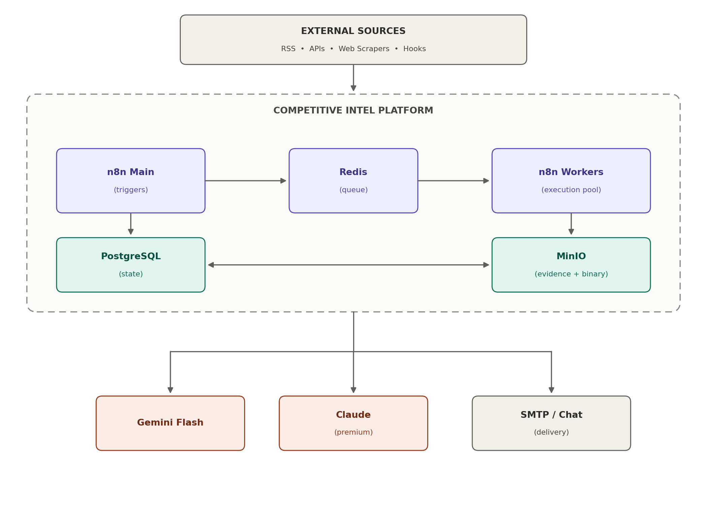
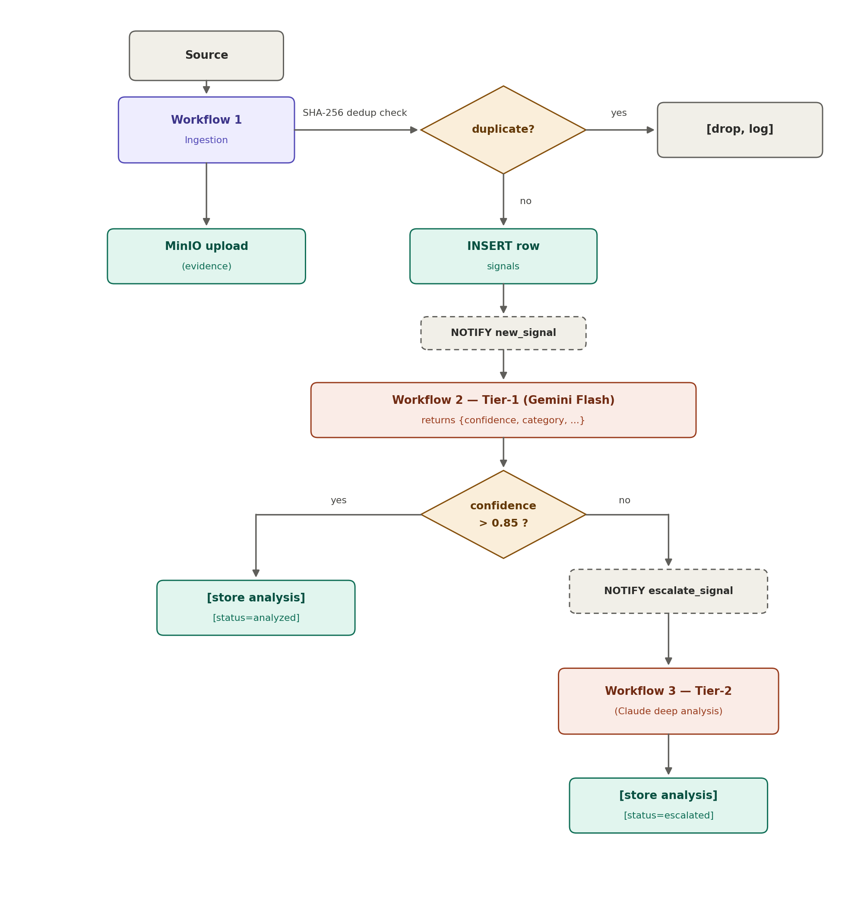
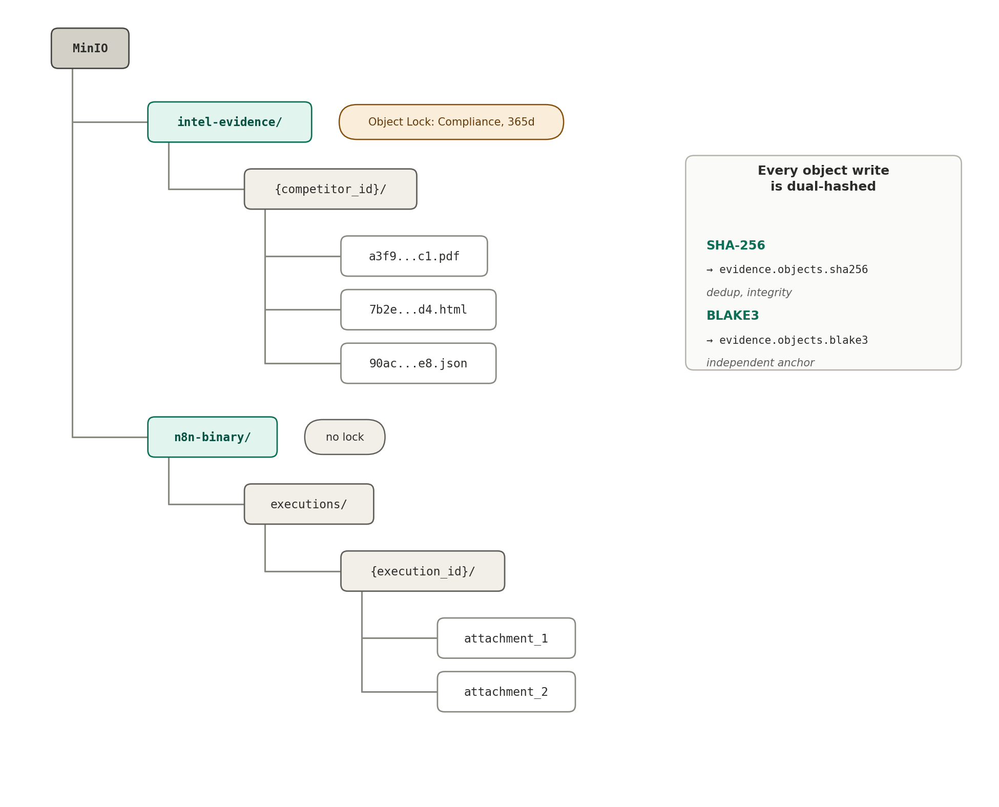

The challenge
Competitive signals arrive through separate sources and formats. Teams need a repeatable way to collect them, preserve the underlying evidence, identify meaningful new items, and get analysis to the right people.
AUTOMATION · DATA · AI
A case study in designing an automated competitive intelligence pipeline: collect evidence, remove duplicates, analyze signals in tiers, and route the findings to people who need them.
Portfolio presentation. The enterprise engagement and this synthetic demo are separate. The demo uses sample data and does not connect to the original system or live AI providers.
01 / THE CASE STUDY
Competitive signals arrive through separate sources and formats. Teams need a repeatable way to collect them, preserve the underlying evidence, identify meaningful new items, and get analysis to the right people.
The proposed design uses n8n to orchestrate ingestion and analysis workflows, PostgreSQL for searchable state, and MinIO for source evidence. Redis queue mode separates trigger handling from worker execution. A lower-cost first analysis tier routes uncertain signals to a deeper second tier.
02 / INTERACTIVE SAMPLE
This is a local, deterministic illustration using invented company names and sample content. It does not call Gemini or Claude, write to a database, or represent a production execution.
READY WHEN YOU ARE
The display will show a simulated analysis result and whether the policy accepts it or sends it for deeper review.
03 / ARCHITECTURE
The architecture separates workflow execution, durable structured records, and retained source evidence. Queue workers provide a path to scale execution capacity as demand grows.



PROPOSED DATA MODEL
INTELLIGENCE · POSTGRESQL
idPKnamedomaintieridPKcompetitor_idFKcontent_hashUQevidence_keystatusidPKsignal_idFKtier_usedconfidencecost_usdanalysis_jsonsignal_idPK / FKtier1_analysis_idFKqueued_atEVIDENCE · OBJECT STORAGE METADATA
idPKsignal_idFKobject_keysha256blake3retention_untilOPERATIONS · AUDIT
idPKworkflow_namenode_nameerror_messagetrace_idoccurred_atConceptual schema from the architecture. Column types, additional indexes, and final constraints belong in database migrations.